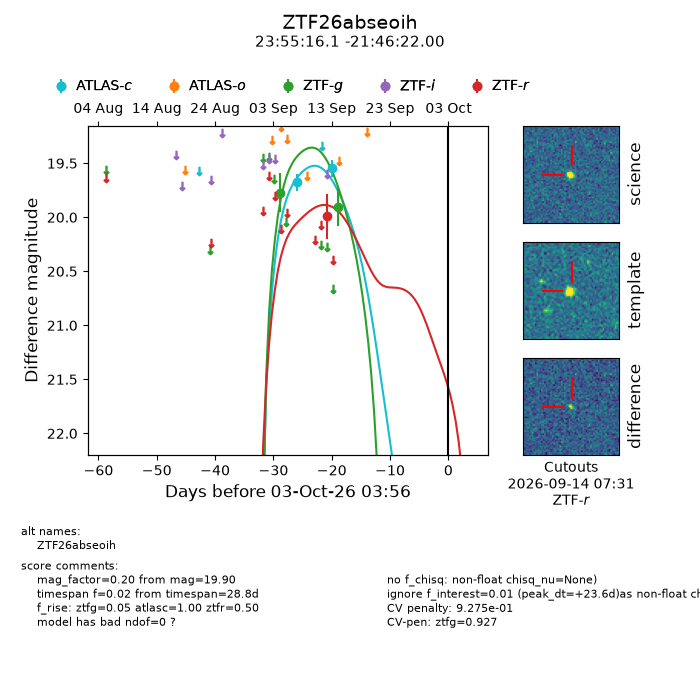
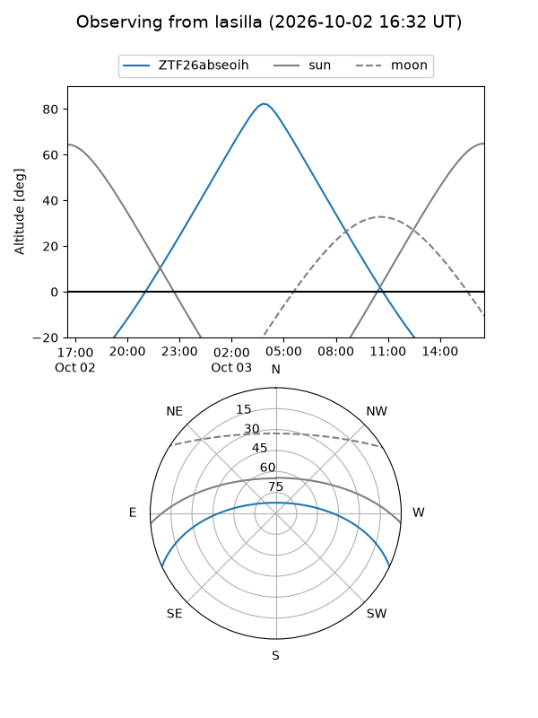
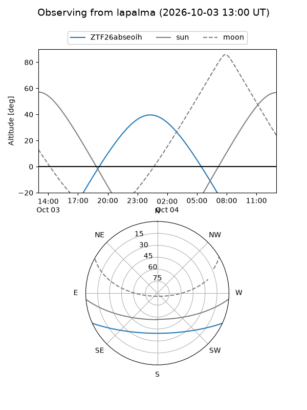
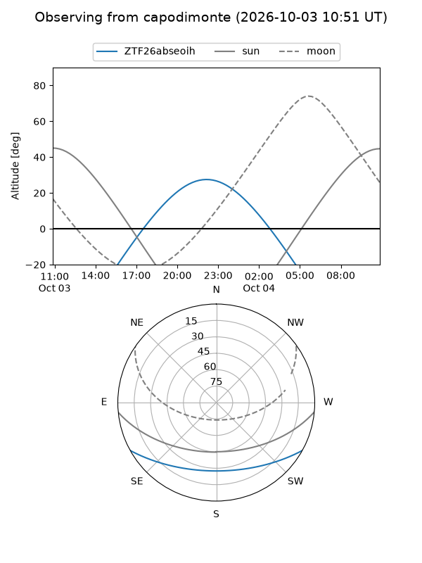
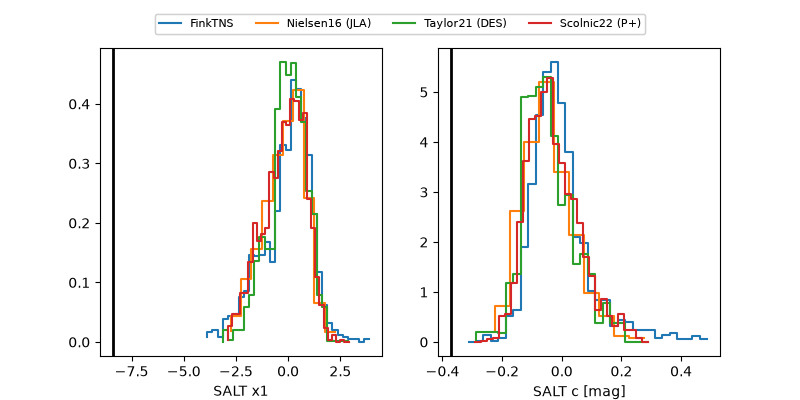

ZTF26abseoih
Target ZTF26abseoih at 2026-10-03 14:43
Aliases and brokers:
FINK-ZTF: ztf.fink-portal.org/ZTF26abseoih
Lasair-ZTF: lasair-ztf.lsst.ac.uk/objects/ZTF26abseoih
ALeRCE-ZTF: alerce.online/object/ZTF26abseoih
Direct TNS query: direct search
alt names
ZTF26abseoih (ztf,fink_ztf)
Coordinates:
equatorial (ra, dec) = 358.8172,-21.77278
equatorial (HMS+DMS) = 23:55:16.12,-21:46:22.00
galactic (l, b) = (52.6322,-76.15256)
Flags:
peak dt: +24.0
likely cv: !!
Photometry:
last atlasc=19.55, ztfg=19.90, ztfr=19.99
2 atlasc, 2 ztfg, 1 ztfr detections
Lightcurve

Visibility



Additional plots
